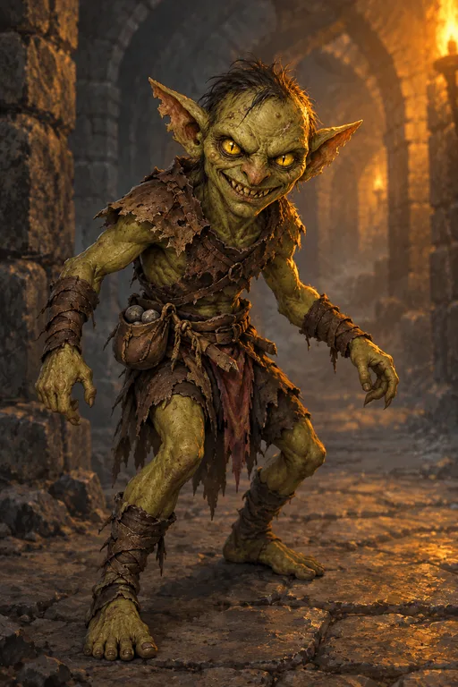

Гоблин
1 этаж: зона гоблинов; 2 этаж, Лес гоблинов: поле, кромка леса, поселение
Статы
Маленький гуманоид (монстр). КД 12 (рваная кожа), ОЗ 5 (2к6−2), скорость 9 м. Опасность 1/8.
| СИЛ | ЛОВ | ТЕЛ | ИНТ | МДР | ХАР |
|---|---|---|---|---|---|
| 8 (−1) | 14 (+2) | 8 (−1) | 8 (−1) | 9 (−1) | 6 (−2) |
Навыки: Скрытность +4. Тёмное зрение 18 м.
Поведение
- Трусость. Когда погибла половина стаи, каждый выживший делает спасбросок Мудрости Сл 10. При провале убегает.
- Ловушечники. В коридорах рядом со стаями стоят самодельные капканы; сами гоблины в простые ловушки не попадают.
- Вожак. В стаях от 7 особей одна крупнее (КД 13, ОЗ 13). Пока она жива, стая не разбегается.
Атаки
- Ржавый нож. +4 к попаданию, 1к4+2 колющего.
- Праща. +4 к попаданию, дальность 9/36 м, 1к4+2 дробящего.
Эссенция
- Ловкость +1
- Скрытность +1
- Тёмное зрение +3 м
- Сила −1
Хитрость (П)
- Простые ловушки (Сл обнаружения 12 и ниже) в пределах 3 м персонаж замечает автоматически, без проверки.
- Простую ловушку можно обезвредить проверкой Ловкости с преимуществом, инструменты не нужны.
- Остальные ловушки: +2 к Восприятию и Расследованию при их поиске.
Поставить ловушку (А)
- Мана: 4.
- Время: действие.
- Дальность: свободная клетка в пределах 1,5 м.
- Длительность: 1 час или до срабатывания. Одновременно не больше 3 ловушек.
- Сл: 8 + бонус мастерства + модификатор Ловкости. Ловушка скрыта: заметить её можно Восприятием против этой Сл.
- Эффект: существо, вошедшее в клетку, делает спасбросок Ловкости. Провал: 1к6 колющего урона и обездвижено до конца своего следующего хода. Успех: половина урона, без обездвиживания.
- Вырваться раньше: действие и проверка Силы против Сл ловушки.